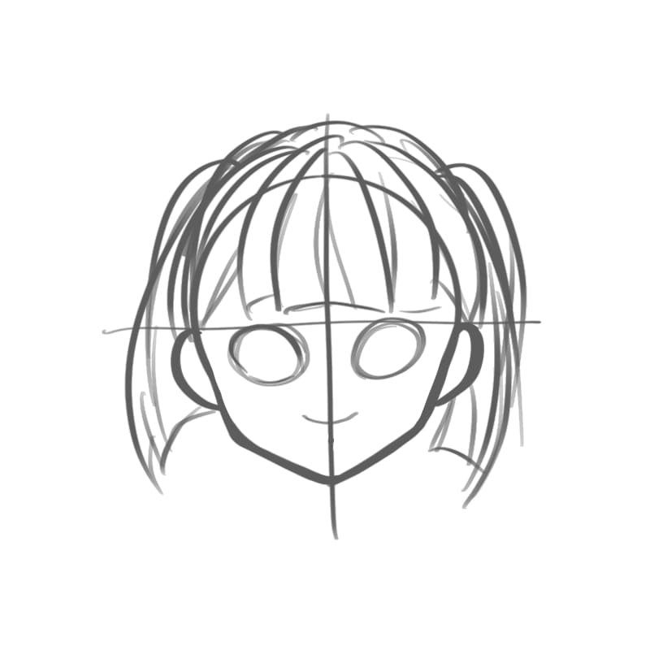
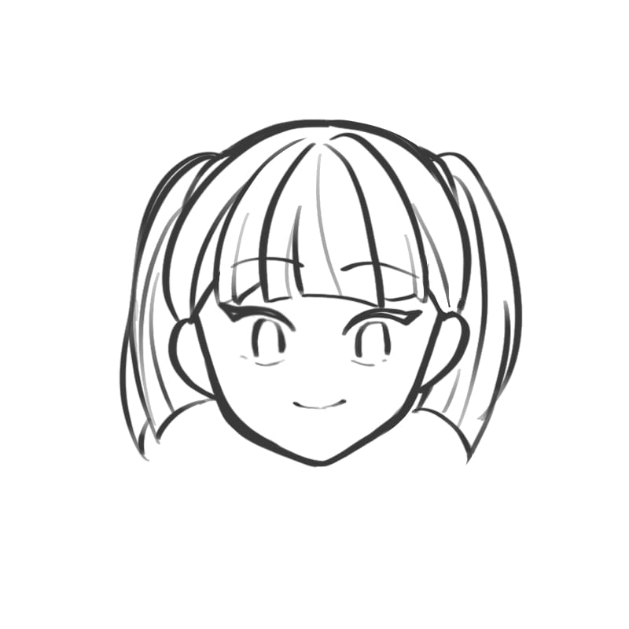
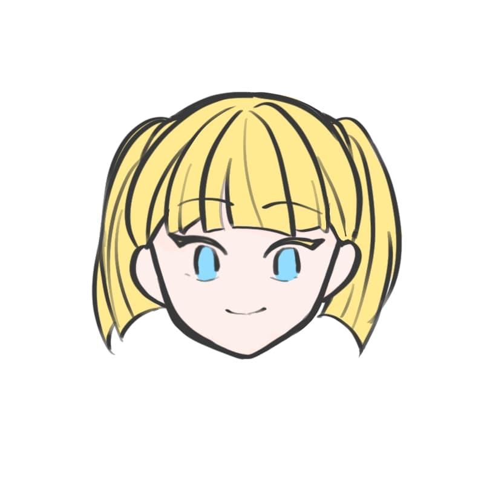
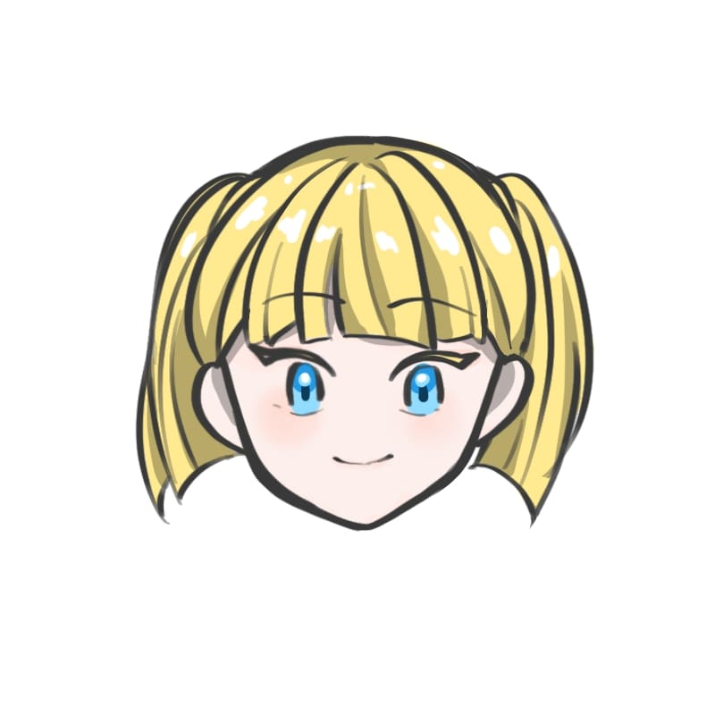

How to draw cute chracter face
INTRODUCTION
People need to know how to perform my skill because drawing is very convenient skill. Drawing helps expressing
your creativity, ideas and also helps reducing stress. This "How to draw cute character face" will help you
to interested in drawing.
materials
You only need two materials!
In examples, I used digital program by Ipad.
First Step
Let's draw shape of face!
- Draw circle.
- Draw reticle.
- Make jaw on circle.

Second Step
Let's draw sketch of the face!
- Draw ears. The highst point of ears
are meet at reticle line.
- Draw sketch of eyes. It's ok that sketch is just circle.
It is located at same height to ears. make little space between eye and reticle line.
- Draw sketch of mouth. It is important that
mouth is located in midium.
- Draw sketch of hair. hair is start at top of head.
Be careful to draw hair to sharp and hard.

Third Step
Let's draw details of the face!
- Draw details of eyes. draw eyebrow above the sketch. It doesn't
need to be so high-quality. Just simplized line is cute enough.
- Draw details of hair. I doesn't need to be so high-quality, too.
Draw curved lines, but do not use too much lines.
- Clean the lines of ears, mouth, and shape of face. Do not draw lines
too much. Try to use one line at once. Erase extra lines like reticle.

Fourth Step
Let's color the character!
- Color the base color of character. color the skin, hair, eyes, mouth.
It doesn't need contrast.
- make contrast to character. Use original color + gray Color
to make contrast. Use original color + white color to Make
lights. Make fushing, eye makeup and lips.

Do you satisfied with your picture? If don't, try to fix. That will make you grow up.
This drawing is full of your creativity.
The picture that makes you feel happy and proud is good picture.
Now, enjoy drawing.